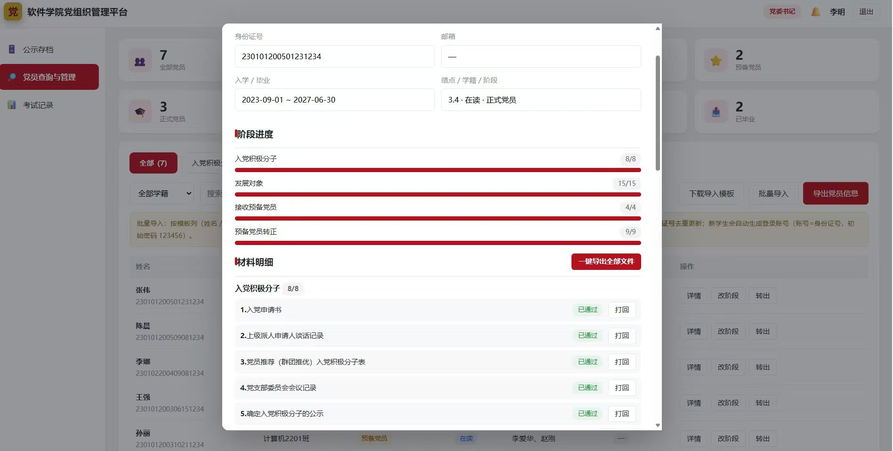
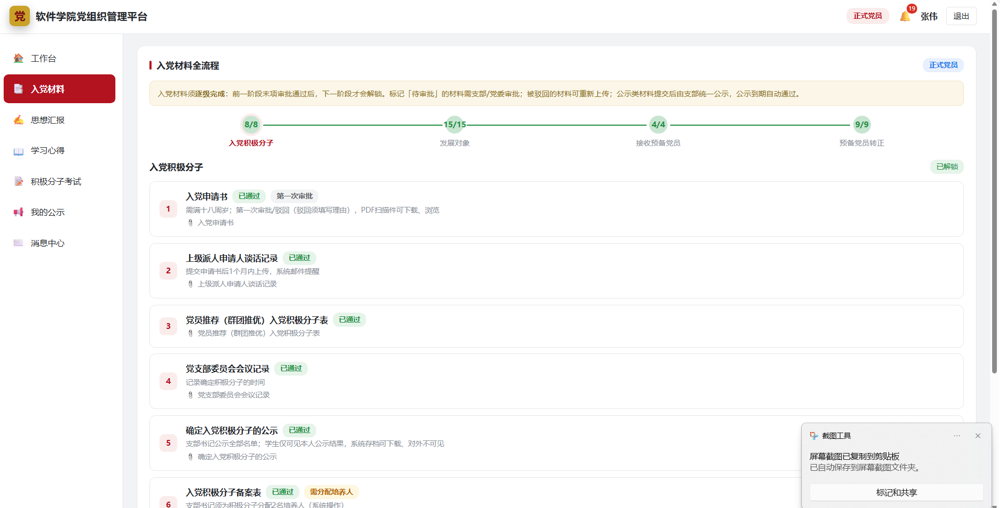
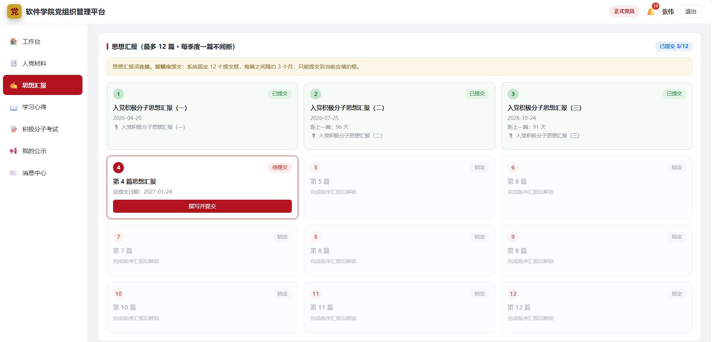
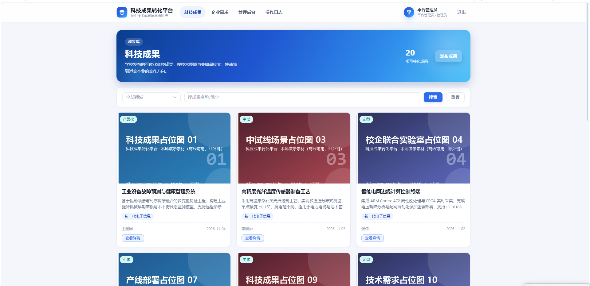
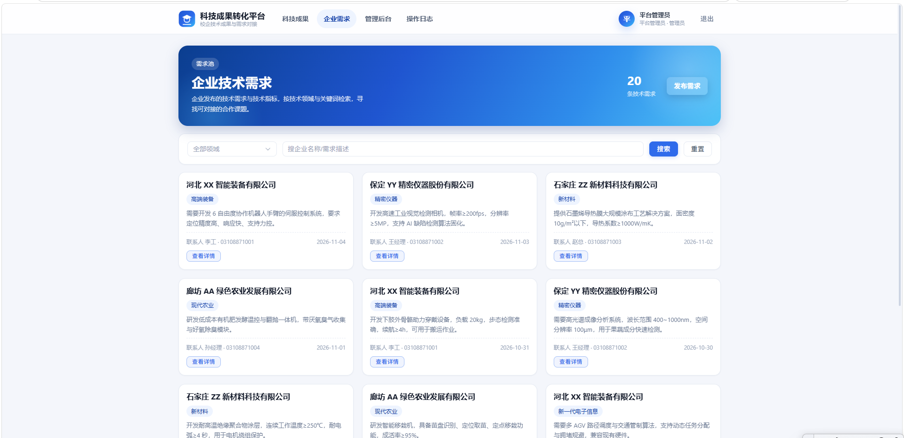
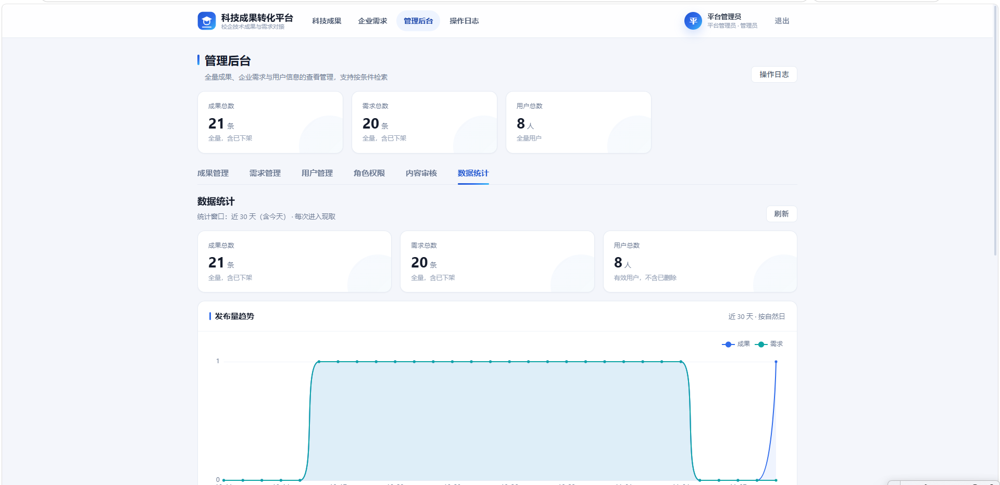
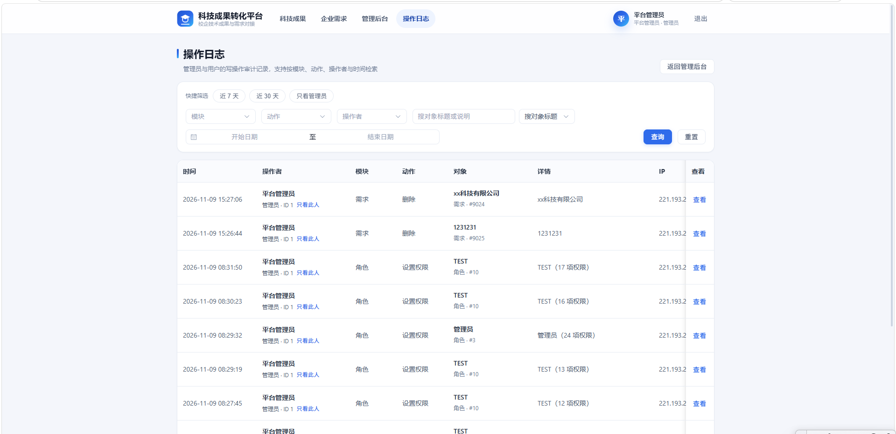

项目专题档案 · 项目档案 / 三项目总览3 个项目文件夹 / 3 份 docx / 7 张截图2026-11-09
C 阶段时间轴 × A 杂志专题档案 · 顶部单行节点条与项目切换，左侧切换三个项目，右侧只列当前项目的六个阶段节点
三个项目，
一张顶部节点地图
从第一个项目开始阅读
顶部单行节点条，左侧切换项目、右侧只显示当前项目 6 个阶段，3 个项目共 18 个阶段节点；点节点跳到当前项目的对应阶段，切项目按钮或数字键换项目，方向键顺序翻节点，数字键 1 / 2 / 3 直接切项目，滚轮自然滚动，顶部细线随阅读位置推进。正文以 C 的六段阶段时间轴为骨架，融合 A 的报头、衬线标题、首字下沉、三列长文、粘性事实清单与带图注证据。
资料来源：3 份已提交 DOCX 与 7 张截图，六段框架来自项目组合看板调研，仅作分组名，status / progress / updatedAt / links 文档均未提供，页面显示「—」
项目 01 / 03
基于原型设计实现，
把入党全流程搬进系统
面向高校党建工作的信息化管理系统。文档逐字写明了前后端架构、三类角色、四阶段工作流与在线考试，却没有给出结构化阶段、状态、进度、更新时间，也没有需求规格说明书或验收记录。六段框架来自项目组合看板调研，仅作分组名；段内进度叙述一律引用 DOCX 原话，未提供的字段显示「—」。
- 项目展示名
- 高校党组织管理平台项目介绍
- 结构化阶段
—- 状态 / 进度 / 更新时间
— / — / —- 界面证据
- 3 张外部截图
阶段 01 · 01 高校党组织管理平台
需求分析
文档未给结构化阶段
文档写明这是一套面向高校党建工作的信息化管理系统，基于原型设计实现，采用前后端分离架构。系统围绕学生、支部书记、党委书记三类角色构建，采用 JWT 登录鉴权；学生使用身份证号登录，可进行注册、材料提交、查看邮件通知；支部书记负责审批、公示发布与培养人分配；党委书记拥有党员查询与存档权限。
已提交资料里没有需求规格说明书、评审纪要、用例清单或原型版本记录。能确定的诉求只来自上面这些功能叙述，本页把它拆成「谁在用、各自做什么」，不把它换算成需求分析完成度。
「高校党组织管理平台是一套面向高校党建工作的信息化管理系统，基于原型设计实现，采用前后端分离架构。」高校党组织管理平台项目介绍.docx · P2
阶段 02 · 01 高校党组织管理平台
方案设计
文档未给结构化阶段
架构与运行方式是文档里最确定的设计事实：后端使用 Spring Boot 3 + MySQL 构建纯 API 服务，运行于 8080 端口；前端采用 Vue 3 + Vite 开发，运行于 5173 端口，通过 Vite 代理完成接口与文件访问；系统同时适配 PC 端与移动端，界面响应式布局。
文档没有提供架构图、原型稿、数据库设计、权限矩阵或技术选型评审记录。8080 与 5173 是开发运行端口，属于实现叙述，不能据此推断部署或上线状态。本段只写看得见的部分，其余留空。
「后端使用 Spring Boot 3 + MySQL 构建纯 API 服务，运行于 8080 端口；前端采用 Vue 3 + Vite 开发，运行于 5173 端口，通过 Vite 代理完成接口与文件访问。」同上 · P2
阶段 03 · 01 高校党组织管理平台
开发实现
原话：基于原型设计实现
核心是覆盖入党全流程的四阶段工作流：从入党积极分子（8 项材料）到发展对象（15 项材料）、接收预备党员（4 项材料）再到预备党员转正（9 项材料），各阶段逐级解锁，全程共七次审批。审批支持通过或驳回，驳回必须填写理由；关键环节设置满 18 周岁注册、绩点不合格拦截等校验。材料均以 PDF 形式上传、下载与在线浏览。
工作流之外还有一组可直接核对的功能：党员信息批量导入/导出（Excel 模板按身份证号去重更新）；积极分子、发展对象、预备党员、正式党员四类分类管理与党关系转出登记；思想汇报按固定 12 框提交，实现连续三个月周期控制与超期提醒；学习心得不限篇数提交；入党积极分子在线考试内置共产党员网知识自测题库共 420 题，支持随机抽题、单选多选自动判分，60 分合格并保留逐题回顾与考试记录；另有待办事项、公示发布、铃铛消息通知与邮件中心。
「基于原型设计实现」是文档叙述，不等于任何完成百分比。8 / 15 / 4 / 9 项材料、七次审批、420 题、60 分都是业务功能与界面证据，不是软件项目开发进度；进度 —、状态 —、更新时间 — 保持留空。

界面证据 · 高校党组织管理平台截图一
截图含阶段计数、党员分类与铃铛消息角标，按 OCR 逐字转录为演示业务数据。演示业务数据，不是软件项目开发进度。
界面证据 · 高校党组织管理平台截图二
材料项数与提交状态为界面证据，不是软件项目开发进度。演示业务数据，不是软件项目开发进度。
界面证据 · 高校党组织管理平台截图三
权限项数与时间戳为界面证据，不是软件项目开发进度。演示业务数据，不是软件项目开发进度。
阶段 04 · 01 高校党组织管理平台
测试验证
未提供测试记录
已提交 DOCX 没有写测试用例、回归记录、缺陷清单或验收签字。文档里最接近验证的一句是对工作流校验的描述：驳回必须填写理由、满 18 周岁注册与绩点不合格拦截，这属于功能规则，不是测试结论。
截图里出现的 8 / 8、15 / 15、4 / 4、9 / 9 与题目数、合格分数、党员人数，全部是业务界面数据，不能拿来当测试通过率或开发进度。本段不升级为「测试通过」，也不写通过率。
阶段 05 · 01 高校党组织管理平台
部署上线
未提供部署信息
文档写明后端 8080、前端 5173 与 Vite 代理，属于本地开发运行叙述；没有给出域名、备案、部署环境、上线日期、运维主体或真实用户量。把开发端口读成已上线，是口径错置，本页不这么做。
因此这一段标注「文档未提供部署与上线信息」，不点亮、不标完成度；结构化阶段仍显示「—」。
阶段 06 · 01 高校党组织管理平台
运维迭代
资料待补
已提交 DOCX 没有写上线后的运维、监控、版本迭代或真实运营数据。按共识，这一节点置灰但仍可点：点开显示本说明，而不是一段编造的阶段完成度。六段框架只是导航分组名，段内写的是原话与界面证据，不是项目到阶段的换算结果。
诚实清单
- 六段阶段来自调研，非文档给出的结构化阶段
- status / progress / updatedAt / links 文档均未提供，页面显示「
—」 - 8 / 15 / 4 / 9 项材料、420 题、60 分均为业务功能数据
- 本项目 3 张外部截图均为演示业务数据，不是软件项目开发进度
- 零编造百分比、零外部 CDN、零联网请求
项目 02 / 03
主要功能都已经做完，
眼下还在边开发边修
基于已提交 DOCX 正文与 4 张界面截图的文字档案：项目做什么、给谁用、做到哪一步、界面上能看到什么、还差什么才能对外用，逐项写清楚。所有进度语句均逐字引用文档原话，文档未提供的结构化阶段、百分比、状态与更新时间一律留空，不做推算。
- 项目展示名
- 科技成果转化平台项目介绍
- 结构化阶段
—- 状态 / 进度 / 更新时间
— / — / —- 界面证据
- 4 张外部截图
阶段 01 · 02 科技成果转化平台
需求分析
文档未给结构化阶段
原话是这样说的：给学校和企业搭个对接的平台，学校把老师的科技成果发上来，企业把想解决的技术问题提上来，双方互相看得见、能按领域查找，发布的内容由管理员把关，随时可以下架。换句话说，它把过去分散在线下、靠人牵线的两件事放到同一张台面上。
已提交的 DOCX 没有需求规格说明书、评审纪要或用例清单。由此可拆出三类参与者与一条短链：学校发布成果、企业提出需求、管理员把关并可下架；路径是发布 → 按领域检索 → 双方看见 → 内容治理。9 个领域、20 条科技成果、20 条企业技术需求、24 张演示图片，都是文档里明写的演示版虚拟数据。
「这个平台就是给学校和企业搭个对接的平台：学校把老师的科技成果发上来，企业把想解决的技术问题提上来，双方互相看得见、能按领域查找，发布的内容由管理员把关，随时可以下架。」产教融合服务平台项目介绍.docx · P2
阶段 02 · 02 科技成果转化平台
方案设计
文档未给结构化阶段
文档没有提供架构图、原型稿或技术选型说明。它描述的是仍在打磨的后台能力：后台常用选项，比如技术领域这些，正在做成自己就能维护的页面，管理员和用户的权限也在细化。
界面截图能补上的设计事实有限但明确：成果列表与需求列表是两个入口；内容按 9 个技术领域分类；后台带统计与操作日志。其余模块划分、权限矩阵、数据模型，已提交资料里都没有。
阶段 03 · 02 科技成果转化平台
开发实现
主要功能都已经做完
这一句给出了时间、状态与具体改动三样东西：10 月 27 日开工，计划 11 月 13 日做一次交付演示；主要功能已完成但仍在边开发边修；改动集中在后台可维护选项、权限细化，以及三处界面毛病：改完角色页面不刷新、身份显示不对、点「我的发布」被带错地方。
文档没有停留在「还在修」这种笼统说法，并说明「改完的都测过了，目前没发现大问题」。这几条是判断当前工作重心的直接依据，比任何进度条都更接近真实情况。「主要功能都已经做完」是文档叙述，不等于完成百分比。
「项目 10 月 27 日开工，计划 11 月 13 日先做一场交付演示，主要功能都已经做完，眼下还在边开发边修……改完的都测过了，目前没发现大问题。」同上，P2，进度叙述

界面证据 · 科技成果列表
学校侧成果按领域列出，可检索；页面显示的成果条数为演示库样例。演示业务数据，不是软件项目开发进度。
界面证据 · 企业需求列表
企业侧技术需求按领域列出，与成果侧互相可见。演示业务数据，不是软件项目开发进度。
阶段 04 · 02 科技成果转化平台
测试验证
改完的都测过了
文档里关于验证只有一句定性叙述：改完的都测过了，目前没发现大问题。它对应的是上面那三处刚修好的界面毛病，属于自测口径，不是测试阶段完成。已提交资料里没有测试用例、回归记录、缺陷清单或验收签字。
因此这一段沿用原话，不升级为「测试通过」，也不写通过率。截图里出现的统计数字与日志条目同样属于演示业务数据，不能拿来当测试证据。
阶段 05 · 02 科技成果转化平台
部署上线
还没有正式上线
平台还没有正式上线，现在挂在服务器上的只是演示版，库里也全是虚拟数据。正式上线还有一步：整个项目要落到企业名下，这件事已经跟科研处沟通过，材料他们正在准备；等企业资质、备案域名这些条件齐了，把演示数据换成真实数据，再按学校意见把登录方式改成企业微信，就能对外用了。
按原话拆成四件待办：项目落到企业名下；企业资质与备案域名齐备；演示数据换成真实数据；登录方式改成企业微信。文档没有给负责人、截止时间或完成标记，本页只列为待办，不排优先级、不标完成度。「还没有正式上线」不能反推成六段里已完成的部署上线。
「平台还没有正式上线，现在挂在我服务器上的只是演示版，库里也全是虚拟数据：20 条科技成果、20 条企业技术需求，按 9 个技术领域分类，配了 24 张演示图片。」同上，P2，上线状态

界面证据 · 管理后台统计
前台「20 项可转化成果」与后台「21 条成果总数」口径差异如实分列，不解释、不合并。演示业务数据，不是软件项目开发进度。
阶段 06 · 02 科技成果转化平台
运维迭代
资料待补
已提交 DOCX 没有写上线后的运维、监控、版本迭代或真实运营数据。按共识，这一节点置灰但仍可点：点开显示本说明，而不是一段编造的阶段完成度。

界面证据 · 操作日志
记录后台操作条目与时间戳，用于内容把关留痕。演示业务数据，不是软件项目开发进度。诚实清单
- 六段阶段来自调研，非文档给出的结构化阶段
- status / progress / updatedAt / links 文档均未提供，页面显示「
—」 - 20 项成果、20 条需求、24 张演示图片、9 个技术领域均为演示业务数据
- 前台 20 与后台 21 口径如实分列，不解释、不合并
- 目录名与 DOCX 标题不一致，展示名按共识采用目录名
项目 03 / 03
当前业务整体处于线下评审环节，
这是业务流程，不是开发阶段
供邯郸市科学技术局及全市科研单位、项目负责人使用的业务平台。文档写明从课题发布到合同签订的全流程与全程留痕，也写明当前业务处于线下评审环节；但没有给出结构化阶段、状态、进度、更新时间，项目目录里也没有附外部截图文件，只有 5 条文档图注。六段框架仅作分组名。
- 项目展示名
- 科研项目申报系统简介
- 结构化阶段
—- 状态 / 进度 / 更新时间
— / — / —- 界面证据
- 外部截图未提供
阶段 01 · 03 科研项目申报系统
需求分析
文档未给结构化阶段
文档写明系统集课题发布、线上填报、材料上传、单位筛选、归口分发、处室审核、二次确认、线下评审与合同签订于一体，申报与审核过程全程留痕，并支持申报书 PDF 生成与导出。使用方是邯郸市科学技术局及全市科研单位、项目负责人。
已提交资料没有需求规格说明书、评审纪要或用例清单。上面这段是功能与业务链路叙述，不是需求阶段完成度；本页不做换算，也不点亮节点。
「集课题发布、线上填报、材料上传、单位筛选、归口分发、处室审核、二次确认、线下评审与合同签订于一体的业务平台，申报与审核过程全程留痕，并支持申报书 PDF 生成与导出。」科研项目申报系统简介.docx · P2
阶段 02 · 03 科研项目申报系统
方案设计
文档未给结构化阶段
从原话可以拆出分层角色与流转顺序：科技局发布课题，项目负责人线上填报与上传材料，单位筛选后归口分发，处室审核并二次确认，最后进入线下评审与合同签订。文档图注还提到登录页、总管理员的申请书审核页面、项目负责人的申请书填报页面、单位真实数据、系统运行数据报表五个界面。
文档没有提供架构图、数据模型、权限矩阵或技术选型说明；五个界面只以图注形式出现，项目目录未附外部截图文件，本页不展示未经核对的图片。
阶段 03 · 03 科研项目申报系统
开发实现
文档未给开发阶段结论
文档写明「全程留痕」与申报书 PDF 生成导出，属于业务能力描述。它没有写版本、迭代、开发记录、技术栈或负责人，也没有把任何功能标为已完成。
379 个申报个人、48 家单位、378 条申报书、348 条待线下评审，是系统现有业务量，不是代码提交量或开发进度。把业务量读成开发阶段，是口径错置，本页不这么做。
阶段 04 · 03 科研项目申报系统
测试验证
文档未给测试结论
已提交 DOCX 没有写测试用例、回归记录、缺陷清单或验收签字。「348 条已进入待线下评审状态」是业务状态计数，不是测试通过率。
文档提到部分截图来源于本地环境、开发环境，但那是截图来源说明，不能当成测试环境或验收证据。本段不升级为「测试通过」，也不写通过率。
阶段 05 · 03 科研项目申报系统
部署上线
业务环节：线下评审
文档原话是「当前业务整体处于线下评审环节」。按第三批澄清的共识，这里逐字直引并显式标注：这是业务流程环节，不是六段框架里的软件开发阶段，不对应到「部署上线」或任何一段，也不标完成度。
文档另写「以下部分截图来源于本地环境」，说明截图来源；没有给出域名、备案、部署环境、上线日期或运维主体。不能据此推断系统已上线或未上线。
「当前业务整体处于线下评审环节。系统现有 379 个申报个人、48 家单位、378 条申报书，其中 348 条已进入待线下评审状态；以下部分截图来源于本地环境。」同上，P2，业务状态
阶段 06 · 03 科研项目申报系统
运维迭代
资料待补
已提交 DOCX 没有写上线后的运维、监控、版本迭代或真实运营数据。外部截图 0 张，文档内嵌图注共 5 条，按原文逐字列出如下，不配图、不补写。
文档图注：图一 系统登录页；图二 总管理员的申请书审核页面（截图来源于本地环境）；图三 项目负责人的申请书填报页面（截图来源于本地环境）；图四 单位真实数据（开发环境）；图五 系统运行数据报表（截图来源于本地环境）。
诚实清单
- 六段阶段来自调研，非文档给出的结构化阶段
- status / progress / updatedAt / links 文档均未提供，页面显示「
—」 - 「线下评审环节」是业务流程环节，非软件开发阶段
- 379 / 48 / 378 / 348 均为业务数据，不是开发进度
- 外部截图未提供，仅 5 条文档图注；零编造图片、零外部 CDN
资料完整性声明
- 需求分析
- 方案设计
- 开发实现
- 测试验证
- 部署上线
- 运维迭代
本页收录 3 个项目文件夹、3 份 docx、7 张截图。高校党组织管理平台 3 张、科技成果转化平台 4 张、科研项目申报系统 0 张：第三份 DOCX 只写了 5 条内嵌图注，项目目录未附外部截图文件，因此本项目不配图，只列图注原文。
六段阶段框架（需求分析 / 方案设计 / 开发实现 / 测试验证 / 部署上线 / 运维迭代）来自调研，仅作导航分组名。当前项目位置逐字引用 DOCX 原话；科研项目申报系统「当前业务整体处于线下评审环节」是业务流程环节，非软件开发阶段，显式标注、不对应。
截图里的 20 与 21 口径、8 / 15 / 4 / 9 项材料、420 题、60 分、379 / 48 / 378 / 348 等业务数字，全部标注为演示业务数据，不是软件项目开发进度。零编造百分比、零外部依赖、零联网请求，双击网页文件即可查看。
资料待上传：其余尚未上传的项目以这一行汇总占位，不进入 3 个项目数组，不生成节点，不填任何字段。